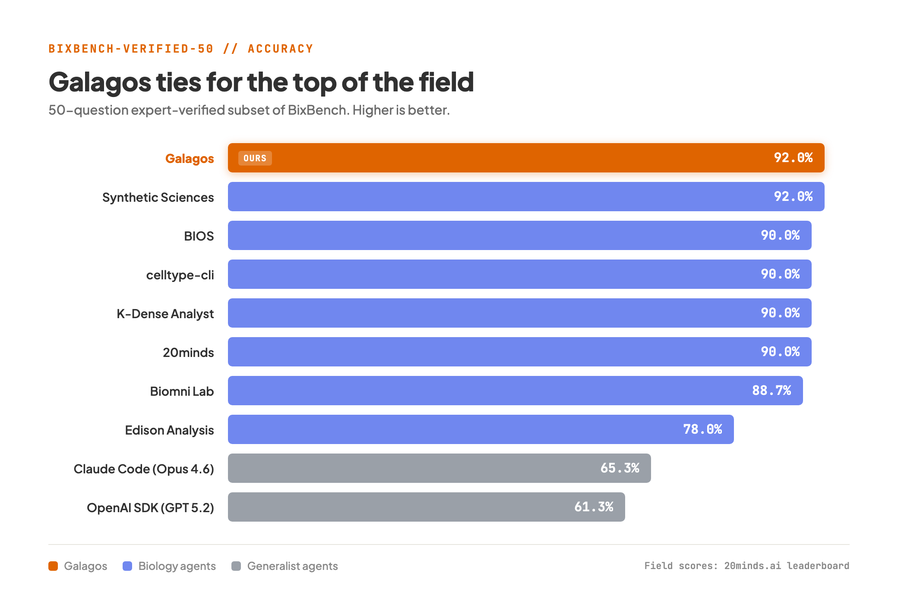
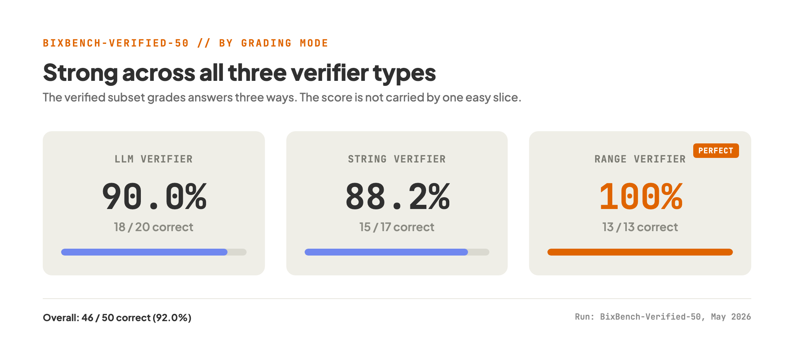

The difficulty of trusting benchmarks for biology agents is not subtle. Part of what makes biology hard is that mistakes are quiet. A flawed analysis does not crash or throw an error, it produces a plausible-looking number that can travel through a project for months before anyone catches it. Real bioinformatics work is full of judgement calls. Sometimes a question is underspecified, two defensible methods give two different answers, and once in a while the answer key is just plain wrong. A raw pass or fail score on that kind of test tells you as much about the test as it does about the agent.
That is what makes the verified version of BixBench worth paying attention to. BixBench-Verified-50 is a 50-question subset of the original benchmark, built by Phylo, that has been cleaned with domain experts: ambiguous questions removed, wording clarified, and incorrect ground-truth answers fixed. The point is to separate genuine agent mistakes from benchmark noise so that a score actually means something.
We ran Galagos on that verified set. It scored 46 out of 50, or 92.0%. On the public leaderboard that compares biology agents on this subset, that ties for the highest result on the board.

Why the verified subset matters
The original BixBench benchmark is useful, but it blends together three different kinds of failure:
- real agent mistakes,
- questions that are ambiguous or underspecified,
- ground-truth answers that are wrong or inconsistent.
These are not the same thing. An agent chooses a reasonable way and you mark it wrong because the benchmark silently expected a different one. That doesn't tell you the agent is bad. It tells you that the question needs work. The verified subset tries to cut out that noise, which is what makes the score more informative than a number on the raw benchmark.
How much does that noise matter? Phylo, who built the verified subset, reported that one system, Biomni Lab, went from 52.2% on the raw benchmark to 88.7% on the cleaned one. Most of that 36-point jump was not the agent suddenly getting better at biology. It was the benchmark no longer marking down reasonable answers for the wrong reasons.
Here is how Galagos lands next to the other systems reported on the leaderboard:
| System | Accuracy |
|---|---|
| Galagos | 92.0% |
| Synthetic Sciences | 92.0% |
| BIOS | 90.0% |
| celltype-cli | 90.0% |
| K-Dense Analyst | 90.0% |
| 20minds | 90.0% |
| Biomni Lab | 88.7% |
| Edison Analysis | 78.0% |
| Claude Code (Opus 4.6) | 65.3% |
| OpenAI Agents SDK (GPT-5.2) | 61.3% |
The last two lines are worth a careful reading. They’re not raw models on a leaderboard. They're general purpose agent setups. Claude Code on Opus 4.6 and OpenAI Agents SDK on GPT-5.2. They're run against the same questions. The most telling thing is the gap between them and the biology-specific agents above. A capable harness designed for this sort of work clears tasks that a strong general agent does not.
These numbers should always be taken with some caution, because prompting, tooling, and run conditions all shift the result. The truth is, one system isn’t necessarily ahead of another by a point or two for all time. It is that the best biology agents are now gathering at the top of a test built to be fair, and Galagos is one of them.
Breakdown by verifier type
The verified subset assesses answers in three ways: an LLM evaluates open-ended responses, an exact-string check deals with named answers, and a numeric range check handles quantities. Galagos did well on all three, which is good because it means the score isn't being inflated by one easy part of the benchmark.

| Verifier type | Correct | Total | Accuracy |
|---|---|---|---|
| LLM verifier | 18 | 20 | 90.0% |
| String verifier | 15 | 17 | 88.2% |
| Range verifier | 13 | 13 | 100% |
We are very pleased with the range result. Numeric range questions are the ones where a small methodological slip appears as a wrong number and Galagos got all of them within the accepted bounds. That's the most similar part of the benchmark to what a working analysis has to do: a quantity that sticks around.
What the misses tell us
92.0% is good and it is not perfect. Galagos missed four questions, and it's worth looking at them honestly, because they're not all the same kind of miss. Of the four, two are on LLM-judged answers, two on exact-string answers, and zero on the numeric range checks.
| Question | Verifier | Expected | Galagos | What happened |
|---|---|---|---|---|
| bix-26-q5 | String | 3 | 1 | Wrong value on an exact-answer question |
| bix-30-q3 | String | 0:0 | 1:0 | Reported 1:0 where the answer was 0:0 |
| bix-45-q1 | LLM judge | 7.6968e-54 | ~1.52e-56 | Large numeric gap on a judged p-value |
| bix-61-q5 | LLM judge | 2.68 | 2.56 | Small quantitative miss |
Two of them are narrow. bix-61-q5 is a rounding distance miss on an otherwise reasonable answer. bix-30-q3 is off by a single value. Two are more substantial: bix-26-q5 lands on the wrong value and bix-45-q1 is a real gap on a very small p-value. Interestingly, both bix-45-q1 and bix-61-q5 appear in the published miss list of another top scorer, K-Dense, suggesting that they lie at the genuinely hard edge of the set, rather than indicating any systematic weakness on our side.
That spread is better than having one failure mode drag down the whole score. It also tells us where the next round of work is going to be.
Grading the process, not just the answer
One honest caveat: 92.0% is a result-based score. It compares final answers to a ground truth and says nothing about how each answer was reached. Phylo, whose work this subset comes from, makes the point well. Final-answer grading cannot tell a sound method from a lucky guess, and for analytical work that throws away most of the evaluation signal. A reasonable method that lands on a slightly different number scores the same zero as a real mistake. The direction they argue for is trace-based evaluation: grade the analytical steps, the way peer review reads a methods section and not just the abstract.
That happens to be the bet Galagos is built on. Every step of every run is logged and reproducible, so the trace is there to read, not reconstructed after the fact. A confident answer reached by a shaky route is still a problem, and the point of a recorded trace is that you can catch it. A benchmark that reads the process is the kind of test we want to be measured on, and it is coming. For now, a clean result-based score is a fair first checkpoint, and this is where Galagos lands on it.
Why it matters
The leaderboard position is not the bigger point. It is what a cleaned benchmark looks like when there is no noise. If you just look at messy benchmarks, you can convince yourself biological agents are worse than they really are. Clean up the questions and the grading, and a different picture emerges: a capable agent can already do a large share of real bioinformatics tasks correctly, end to end.
That's the picture we see on the platform. The value is not in getting a nice-looking answer and hoping. It's in doing the analysis, picking reasonable methods, writing down what was done and getting to a number that holds up to a second look. Galagos is a generalist agentic platform for bioinformatics, with all steps logged and reproducible and all bytes hosted in the EU. This is a checkpoint in a benchmark to see if that approach stands up to scrutiny. It did at this check point.
Benchmarks only get you so far. The most difficult scientific work is rarely a fixed short-answer test. Real research is messy datasets, fuzzy problem definitions, partial context, shifting goals, and an output format that depends on the decision downstream. There is no benchmark today that can capture the whole picture, and BixBench-Verified-50 makes no such claim. But it’s a decent enough checkpoint for where these systems are today. Galagos scored 92.0% at that checkpoint.
Try it on your own data
If you want to pressure-test a real analysis rather than a benchmark, that is the standard that matters most. Bring a dataset and a question you actually care about, and see how far Galagos gets on it. Start an analysis and judge it on your own hardest problem.
Sources
- Original benchmark and the evaluation argument (Phylo): phylo.bio, "Evaluating AI Agents in Biology"
- BixBench-Verified-50 dataset (Phylo): huggingface.co/datasets/phylobio/BixBench-Verified-50
- Field leaderboard scores: 20minds.ai
- Per-system verified-subset results and benchmark background: K-Dense, "K-Dense Web Scores 90.0% on BixBench-Verified-50"
Galagos result from our own BixBench-Verified-50 run, May 2026 (46 of 50 correct). Leaderboard figures as published on the dates above and current at time of writing.